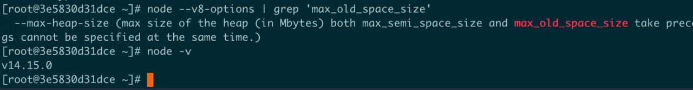

起因
前几天被叫去排查一个老系统的线上问题，现象是服务不稳定，偶尔不可访问，查看监控发现服务偶尔重启，在重启前会出现内存升高一段时间，查看报错日志，在每次重启前会报 OOM（out of memory），并且每次 OOM 之前都会访问同一个接口， 线下模拟请求这个接口，发现是因为 response 数据量太大导致内存溢出，贴出报错情况。
FATAL ERROR: CALL_AND_RETRY_LAST Allocation failed — process out of memory
当为执行应用程序分配的内存少于运行应用程序所需的内存时，会发生此错误。
内存限制
V8的内存限制：64 位系统约为 1.4 GB，32 位系统约为 0.7 GB，即当 64 位系统中 node 使用总内存超过 1.4 G时，会报 OOM(Out Of Memory)。
为什么会有内存限制？
理论上 64 位操作系统可以访问 16TB 的空间，这比 1.4GB 要多的多！但因为以下两个原因，V8 的内存限制实际上要少的多
- JS （运行环境里）单线程的执行机制。
- V8 垃圾回收机制。
因为 js 是单线程运行的，执行垃圾回收会占用主线程的时间，导致全停顿（Stop-The-World），如果垃圾回收时间过长，浏览器页面上会感受到卡顿，Node 端脚本执行被阻塞。（V8 目前针对全停顿的体验问题也有了优化方式）
按照官方的说法以1.5G的垃圾回收为例，v8做一次小的垃圾回收需要50毫秒以上，做一次非增量的垃圾回收需要1秒以上。
通常在内存使用量快满时，进行垃圾回收（具体机制参考V8 内存体系与垃圾回收），内存越大，越不容易执行垃圾回收，执行一次垃圾回收耗费时间也越长，内存越少，垃圾回收越快，效率越高，所以程序减少内存使用，可以提升服务性能。
什么情况下会耗尽内存？
如果试图装载一个比可用内存还要大的数据，就会出现内存不够的情况，导致内存溢出，进程退出。
另一种情况是内存泄露，本该被回收的变量，没有被回收，常驻在内存里，内存使用量会随着时间的推移而增长，最终导致内存耗尽。
可以通过图示来辨别内存问题
解决办法
一、 产品上解决
数据量太大，浏览器加载及处理耗费时间太长也会导致页面卡顿，影响用户体验。
二、扩充内存
设置 --max-old-space-size=4096 扩充为 4G 内存，
注意：是下划线还是中横线，取决于 node 版本号，通过 node --v8-options 命令来看 V8 参数。我试了几个版本
8版本是下划线
10版本是中横线
14版本是下划线

这里太坑了！！Node 版本不考虑参数兼容性，因为本地 Node 版本和线上机器 Node 版本不一致，本地测试通过发现线上没生效，找了好久原因ಥ_ಥ。
三、 流式解析
使用 buffer，buffer内存的分配是c++层面完成的，不会利用V8的堆内存。